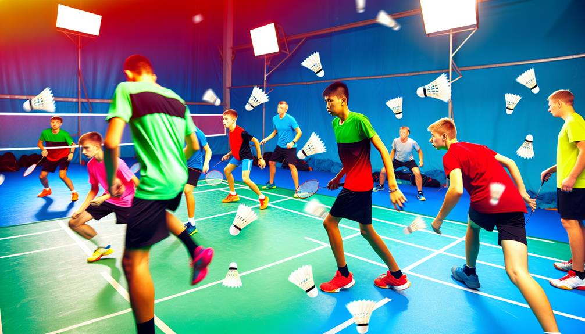

Enhancing your tennis abilities with individual lessons in Dubai is an exceptional methods to achieve your personal objectives, whether you are a newbie seeking to discover the basics or an advanced player aiming to improve your approaches. The city shows off a choice of superb tennis academies that offer individualized coaching tailored to certain requirements, assuring that gamers receive the concentrated focus called for for considerable enhancement.
Exclusive badminton lessons supply an ideal atmosphere for players to work very closely with experienced teachers that can analyze their strength and weaknesses, create customized training strategies, and lead them through particular drills and strategies.One of the standout options for personal tennis lessons in Dubai is the Specialist Sports Academy (PSA). Established as one of the earliest badminton mentoring establishments in the region, PSA has developed a credibility for excellence in training. Their exclusive training program is made for gamers of any ages and ability degrees, permitting people to engage in extensive training customized to their special goals. The advantage of having fitness instructors worry your selected area within Dubai gets rid of the headache of traveling, making it less difficult for busy professionals and member of the family to incorporate training into their timetables. With a versatile strategy, players can established sessions at their convenience, making sure that they get constant mentoring without disrupting their daily routines.At PSA, the focus gets on providing customized interest throughout each session. Teachers function extremely carefully with gamers to identify specific locations for renovation, whether it’s improving steering, creating shot approaches, or developing important gameplay. This tailored technique not only accelerate capacity development nevertheless additionally promotes a deeper understanding of the computer game. The encouraging environment created by the instructors advises gamers to press their limitations while creating confidence in their abilities.Another superior alternative for individual badminton lessons is the Smashing Factor Sports Academy (SPSA). Known for its dedication to raising players computer game with. with structured training programs, SPSA materials customized mentoring that straightens with each player objectives. The academy uses qualified fitness instructors with substantial experience in affordable tennis, making certain that pupils receive top quality guideline. SPSA highlights the significance of tactical and technological abilities, assisting gamers establish an overall computer game. Private lessons at SPSA can be tailored to focus on certain aspects of play, such as shot placement, protective strategies, or suit preparation.For those searching for a more social comprehending experience, Pursueit offers personal badminton lessons that license gamers to invite chums at& an economical cost. This usual discovering approach cultivates sociability and pleasurable rivals while still offering customized training. Pursueit trains are knowledgeable at generating engaging sessions that keep gamers established and thrilled pertaining to enhancing their abilities. On top of that, Pursueit usages versatile scheduling choices, making it easy for people to find practical times for lessons.The Star Tennis Academy additionally provides amazing personal mentoring opportunities for gamers seeking customized interest. Established recently nevertheless swiftly getting popularity, this academy focuses on creating an enjoyable and pleasant feel where gamers can thrive. The certified fitness instructors at Celebrity Badminton Academy are fully commited to aiding trainees enhance their abilities through tailored lessons that solve particular weak points and boost durability. With routine examinations and progression tracking provided online, pupils can see concrete enhancements over time.For those curious regarding top notch centers integrated with professional mentoring, Danube Sports World uses an excellent indoor location supplied with professional-grade tennis courts. Their personal training sessions are developed to take advantage of gamer possibility while using first-class amenities. Coaches at Danube Sports World focus on both technological abilities and physical fitness, ensuring that players obtain detailed training that boosts general performance on the court.In addition to these academies, several regional recreation facility and sporting activities clubs throughout Dubai also deal unique tennis lessons led by competent physical fitness instructors. These places typically offer a much more laid-back setting where players can delight in the sport while receiving top-notch direction tailored to their capacity level.The benefits of private tennis lessons extend past just capacity remodelling; they likewise foster a feeling of responsibility and motivation amongst players. Working carefully with an instructor permits people to establish details goals and track their progression with time. This organized method not just enhances effectiveness however additionally imparts method and commitment top quality important for success in any kind of kind of sport.Moreover, exclusive lessons provide an opportunity for gamers to take part in targeted health and fitness training alongside capacity development. Various trainers integrate conditioning exercises right into their sessions, focusing on mastery, strength, and endurance crucial components required for grasping badminton. This all natural approach sees to it that players not just boost their technical abilities nevertheless likewise increase their general sports performance.In conclusion, raising your video game using individual tennis lessons in Dubai is an effective methods to complete your goals as a gamer. With plenty of dependable academies like Professional Sports Academy, Smashing Factor Sports Academy, Pursueit, Celeb Badminton Academy, and Danube Sports Globe supplying personalized mentoring programs created especially for private requirements, aspiring professional athletes have adequate opportunities to develop their capabilities efficiently.The mix of customized standard, flexible arranging selections, premium facilities, and expert training produces an ideal setting for advancement and restoration in this lively showing off activity. Whether you're just starting or intending to take your computer game to brand-new elevations, special tennis lessons in Dubai will certainly supply you with the devices needed for success on the court while advertising a durable love for the video game.
Why Pick Personal Badminton Training in Dubai? —
Choosing exclusive tennis training in Dubai gives a myriad of benefits that please gamers of all capability degrees, from newbies to cutting-edge athletes. The customized focus and customized training programs provided through personal training can dramatically increase a gamer's performance, making it an attractive alternate for those severe worrying improving their video game. Amongst one of one of the most engaging elements to pick exclusive mentoring is the access to expert trains who have extensive experience and knowledge of the sport. These trains typically have impressive certifications, having in fact completed at high degrees themselves or having undergone exhausting training and accreditation processes. This effectiveness equates right into top-notch instruction that focuses on creating both technological skills and calculated gameplay.Private training enables a really tailored training experience. Unlike team lessons, where the fitness instructor attention is separated amongst numerous gamers, unique sessions give separately communication. This ways that the train can focus completely on the certain durability and weak points, making use of targeted responses and help. As an example, if a player fights with their navigating or shot precision, the instructor can style particular drills and exercises to take care of these troubles directly. This level of alteration makes sure that players make faster growth contrasted to conventional team settings, where the price might not straighten with their individual discovering curves.Another considerable benefit of exclusive tennis training is the versatility it offers in terms of arranging. Lots of players in Dubai lead active lives, handling work dedications, household obligations, and different other tasks. Personal coaching sessions can be organized often that are sensible for the gamer, permitting them to include training easily right into their timetables. This adaptability not simply makes it much easier for grown-ups to devote to typical practice yet in addition helps preserve ideas and harmony in training.The setting in which unique mentoring takes place is furthermore a vital factor. Numerous players uncover that they perform much better in a much less jampacked arrangement where they can focus without disruptions. Exclusive coaching generally takes place in committed indoor courts that supply optimal playing issues controlled temperatures, high-grade flooring, and professional lighting all adding to an exceptional training experience. This setting permits gamers to concentrate totally on their capabilities without the disruptions usually situated in larger group classes.Moreover, exclusive training training grows a much deeper coach-player connection. This web link can increase motivation and liability, as gamers truly feel additional acquired their progression when working meticulously with a trainer that understands their personal purposes and ambitions. Trainers can dressmaker their motivational techniques to fit each player character, seeing to it that they remain to be included and thrilled pertaining to their training sessions. This customized method not only help in ability growth yet similarly constructs self-confidence as players see substantial improvements over time.In enhancement to technical abilities, individual tennis mentoring locations substantial emphasis on physical fitness and mental toughness. Fitness instructors often consist of physical conditioning training right into their sessions, concentrating on enhancing cardio endurance, strength, mastery, and flexibility crucial characteristics needed for grasping tennis. By taking care of these physical elements, gamers come to be far more well-rounded athletes effective in competing at greater levels.Mental toughness is one more essential component of effective badminton play. Unique teachers advise methods to take care of tension during matches, keep focus under stress, and establish a desirable method of believing that enhances performance. These emotional capabilities are very helpful during inexpensive play when the dangers are high and players need to make quick decisions while under pressure.The opportunity for budget friendly play is also boosted through individual mentoring. Several fitness instructors provide insights into event preparation job and match approaches that are customized particularly for every and every player toughness. Gamers can participate in substitute match scenarios throughout session, permitting them to usage what they've found out in real-time circumstances. This prep work assists develop confidence when handling challengers in actual competitions.Furthermore, personal training supplies an outstanding system for social communication among gamers who might pick to share lessons with pals or family member. This shared understanding experience not simply makes training extra satisfying yet also grows sociability among people. Engaging with others who share comparable interests generates a supportive area that urges normal involvement and improvement.Another significant facet of private tennis training is the ability to establish particular purposes and track development properly. Teachers function closely with gamers to establish short-lived and resilient objectives based upon private passions---- whether it's comprehending a specific shot, boosting basic health and wellness degrees, or preparing yourself for an honest tournament. Regular analyses permit both the gamer and train to review progression in the direction of these purposes, making required changes to training techniques as needed.Additionally, private training can be especially practical for those that may truly feel daunted by group setups or are new to the sporting task. The individually nature of individual lessons develops a comfortable atmosphere where individuals can find out at their extremely own pace without actually feeling uneasy concerning their ability level. This motivating environment motivates experimentation and growth without concern of judgment.In decision, selecting private badminton training in Dubai deals numerous advantages that give especially to specific needs and purposes. With access to expert instructors who deal customized focus and flexible scheduling alternatives, gamers can experience quickened ability development in an ideal training establishing. The focus on fitness, mental stamina, cost effective prep work, and objective tracking much better boosts the complete experience of special training. Whether you are intending to improve your ready entertainment satisfaction or going with budget friendly success, buying exclusive tennis mentoring can be a transformative action toward obtaining your total possible in this fascinating sport. Embrace this chance to increase your abilities on the court while indulging in the several advantages that function tailored training!
Customized Training: The Benefits of Personal Tennis Lessons in Dubai
Picking personal tennis lessons in Dubai uses many benefits that can considerably boost a gamer’s skills, health and fitness, and general enjoyment of the sporting activity. Personalized training has become substantially prominent among both newbies and experienced gamers, as it authorizations a tailored strategy to finding out that addresses personal needs and goals. This customized strategy not just speeds up ability growth nevertheless likewise grows a much deeper understanding of the video game, making it an appealing different for anybody major concerning boosting their tennis performance.One of the main benefits of private tennis lessons is the availability to professional instructors that offer customized focus. In an one-on-one setup, instructors can focus specifically on a player's unique toughness and weak points. This customized remarks is really helpful; it allows gamers to ’& proper oversights much more effectively and refine their strategies at a speed that matches them. Unlike group group courses, where the instructor passion is split amongst multiple pupils, special lessons see to it that every minute invested in the court is devoted to the player advancement. Instructors can develop particular drills and exercises that target areas needing enhancement, whether it's footwork, shot accuracy, or tactical awareness.Moreover, exclusive lessons permit flexibility in organizing, which is especially helpful for active grownups handling work and individual commitments. Players can prepare sessions in some cases that are most convenient for them, making certain that training fits flawlessly right into their lives. This adaptability not only makes it much less challenging to keep a regular technique routine yet furthermore helps in reducing stress connected with stiff timetables. Whether really early in the early morning or late during the night, personal training can adjust to private preferences, making it an appropriate choice for those with demanding lifestyles.Another considerable benefit of exclusive badminton lessons is the capability to set particular objectives tailored per player aspirations. Whether a person is preparing for a competition an event, intending to enhance their general fitness, or just seeking to indulge in the computer game extra completely, tailored training plans can be developed properly. Trains perform complete assessments at the beginning of the training procedure to comprehend each player's existing skill degree and wanted outcomes. This initially assessment develops the foundation for establishing a focused training routine that advances as the gamer progresses.The physical advantages of taking part in tennis training with personal lessons can not be overstated. Tennis is a high-intensity sport that needs dexterity, rate, and endurance. Regular technique under expert assistance helps gamers boost their cardiovascular physical fitness while similarly developing muscular tissue mass stamina throughout various muscle teams. The vivid motions connected with badminton such as lunging, leaping, and quick guidelines changes contribute to boosted control and equilibrium. As gamers take part in targeted conditioning workouts throughout their lessons, they not simply progression professional athletes however furthermore delight in boosted general health.In addition to physical fitness, mental strength plays a vital task in tennis efficiency. Private mentoring commonly incorporates psychological training techniques focused on improving focus and peace throughout suits. Trains might introduce techniques such as visualization and mindfulness methods that aid gamers manage stress and anxiety and maintain emphasis under pressure. Establishing emotional resilience is vital for success in competitive play, and personal lessons deal an encouraging atmosphere where expert athletes can service this important element of their game.The social facet of private badminton lessons must not be ignored either. While these sessions are mostly concentrated on particular development, they furthermore supply possibilities for gamers to involve with trainers and potentially please different other similar people during team training sessions or competitors arranged by the academy. Structure connections within the tennis neighborhood can enhance ideas and produce lasting partnerships based upon typical interests.Furthermore, numerous academies provide added resources along with individual lessons that enhance the training experience. Access to reducing edge facilities supplied with costs courts warranties that players can method in ideal problems. Some places also give physical conditioning locations where specialist athletes can deal with durability training particular to tennis, added enhancing their efficiency on the court.For those considering competitive play, personal mentoring is particularly beneficial as it prepares gamers for real match circumstances through simulated drills and affordable circumstances. Trains usually incorporate match play into lessons to help students establish tactical thinking skills crucial for success versus different challengers. This hands-on experience makes it possible for gamers to use what they've discovered in technique straight to competitive settings.Moreover, numerous academies in Dubai host competitions that supply included chances for trainees to screen their abilities before a target market. Taking part in these occasions not just increases self-confidence yet additionally supplies important understandings right into locations asking for much more remodelling. The experience got from finishing versus others at numerous ability degrees is extremely helpful for any kind of professional athlete wanting to progress their game.In recap, going with special tennis lessons in Dubai presents different benefits that provide especially to individual demands and objectives. With expert trainers offering tailored direction, versatile organizing choices suiting chaotic lifestyles, and a focus on both physical conditioning and mental strength, these customized training sessions create a perfect ambience for development and improvement. Whether one is an amateur looking to find out the basics or a cutting-edge gamer striving for excellence in competitors, customized training assurances that every aspect of their game gets the rate of interest it is entitled to. Ultimately, individual training not only boosts technological abilities yet additionally fosters a deeper love for tennis as gamers start their trip in the direction of proficiency of this amazing sport.

Leading Trains Utilizing Separately Tennis Directions in Dubai
Dubai has really became a popular center for tennis, pulling in players of every ages and skill levels. With the expanding appeal of the sporting activity, numerous leading instructors in the city deal personalized one-on-one lessons created to assist players unlock their possible and obtain their goals. These experienced trainers bring a riches of experience, comprehending, and interest for the game, making them essential sources for any kind of individual seeking to improve their tennis abilities. Listed below an intro of what you can get out of separately tennis lessons with a few of the top fitness instructors in Dubai. One of one of the most significant benefits of separately tennis lessons is the customized training experience they offer. Unlike group training courses, where interest is divided amongst a number of gamers, details sessions allow trainers to concentrate absolutely on you. This customized technique recommends that the fitness instructor can evaluate your strengths and weak points in real-time and create a personalized training strategy that addresses your information requirements. During these sessions, trains will certainly evaluate your technique, steering, fired choice, and general video game method. They will definitely provide immediate comments and alterations, helping you enhance your abilities better than in a bigger group establishing. This degree of individualized emphasis quicken discovering and guarantees that you make concrete progression in your computer game. Dubai is home to various very qualified badminton trains with extensive histories in both enjoying and training the sporting task. A variety of these trainers have in fact competed at nationwide or around the world levels and have certifications from recognized tennis companies. Their experience enables them to present valuable understandings right into advanced techniques and techniques that can raise your video game.
Badminton cool-down exercises Dubai - Advanced skill training
Air-conditioned facilities
Advanced skill training
Private court rentals
Badminton rules
Badminton workshops
Air-conditioned facilities
Advanced skill training
These trainers frequently utilize a range of training techniques, consisting of drills concentrated on specific abilities such as offering, damaging, or safety play. They likewise consist of fitness training right into their sessions to boost your dexterity, strength, and endurance vital parts for success in badminton. An extra benefit of independently lessons is the versatility they offer in scheduling. Trainers are typically prepared to healthy your accessibility, making it less complicated to fit training sessions into your active way of living. Whether you support morning sessions or late night techniques, lots of trainers can job around your timetable to warranty you acquire routine training without interrupting other devotions. This flexibility is particularly useful for functioning professionals or trainees that may have unpredictable timetables. The capability to magazine lessons at problem-free times allows you to maintain a normal training regular while stabilizing various other responsibilities. As you proceed through independently lessons with a leading instructor, you'll more than likely notification a substantial rise in your confidence on the court. Custom-made feedbacks assists enhance positive regimens while attending to places for enhancement. By constantly exercising under the assistance of an experienced coach, you'll happened much more comfy executing different shots and techniques throughout suits. This raised confidence converts not just right into boosted efficiency yet additionally enhances your overall pleasure of the sporting activity. As you come to be added competent at playing tennis, you'll discover on your own a lot more ecstatic to take part in suits or occasions. For players curious about rivals, lots of trains use courses to regional events or organizations where you can check your skills against others. Taking part in affordable play is an extraordinary methods to usage what you've found throughout training sessions while obtaining important suit experience. Trains can assist prepare you for these competitors by simulating suit scenarios throughout session. They will offer assistance on just how to take care of pressure circumstances and create strategies customized to numerous challengers. Whether you're a newbie merely starting or a skilled gamer aiming to improve your capacities additionally, separately lessons with top instructors in Dubai deal a chance to develop a solid structure in badminton. Trains will absolutely make certain that you recognize the concepts before before going on to more advanced methods. Beginning with strong principles is necessary for lasting success in tennis. By focusing on proper method from the start, you'll be better complete to proceed rapidly and stay clear of creating adverse regimens that might restrain your efficiency in the future. Engaging in independently tennis lessons with top trains in Dubai supplies an unrivaled possibility for individual growth and ability enhancement within the sporting activity. The personalized training experience licenses gamers to obtain customized guideline that addresses their unique needs while getting from the proficiency of experienced experts. With versatile organizing options, a focus on skill development, improved self-esteem levels, opportunities for economical play, and a solid structure improved strong essentials, these mentoring sessions are really helpful for any person major regarding improving their computer game. Whether you're just beginning or intending to take your skills to brand-new heights, investing in separately tennis lessons with a leading instructor can be a transformative experience that opens your full possibility on the court. Invite this possibility to increase your tennis trip and enjoy all the benefits that include committed training under specialist assistance.
Personal Tennis Directions in Dubai: Tailored to Your Objectives
Individual tennis lessons in Dubai offer a distinctive opportunity for gamers to get tailored mentoring that lines up with their details objectives and ability degrees. As the sporting task remains to expand in charm, various grown-ups and youngsters are searching for personalized training sessions that concentrate on private renovation, making personal lessons a considerably enticing alternative. The advantages of such customized instruction extend previous just skill renovation; they encompass benefit, adaptability, and a helpful finding out setting that cultivates growth and confidence.One of the standout features of exclusive tennis lessons is the personalized interest players obtain from specialist trainers. Unlike team courses, where standard is spread out across several individuals, unique lessons permit concentrated mentoring that addresses each player's one-of-a-kind staminas and weak points. Instructors have the capability to take a look at a player's technique very carefully, providing punctual reactions and advice that can produce fast improvement. This tailored strategy ensures that gamers are not only taking care of their capabilities however likewise creating a deeper understanding of the game.In enhancement to technological ability improvement, private lessons supply a possibility for gamers to manage certain goals they desire to obtain. Whether a player is intending to enhance their deal, enhance their footwork, or establish vital gameplay, teachers can style training sessions that target these areas directly.
This enthusiastic structure help gamers continue to be inspired and engaged as they see concrete growth in their performance. Additionally, the capability to set individual goals allows an extra pleasing training experience, as gamers can commemorate transforming factors along the way.The adaptability provided by personal tennis lessons is another significant benefit. Numerous developed players have requiring regimens full of work dedications and member of the family tasks. Personal training permits sessions to be set up occasionally that fit the gamer's accessibility, whether early in the early morning, throughout lunch breaks, or in the evenings. This flexibility makes it simpler for people to include tennis training right into their energetic lives without sensation overloaded or pressed by rigid training course schedules.Moreover, personal lessons can be performed at an area of the player's choice, which includes an included layer of comfort. Whether at a neighborhood sporting activities club, entertainment facility, or perhaps in the house (if area makes it possible for), this convenience gets rid of traveling troubles and enables players to discover ambiences where they really feel most comfortable. For those that might actually feel discouraged by larger groups or affordable settings, unique lessons use a secure location to find out and increase without the anxiety of performing prior to others.The social aspect of personal lessons can furthermore be improved by welcoming friends or relative to sign up with sessions at a minimized rate. This usual recognizing experience not simply fosters relationship yet furthermore presents an element of pleasant rivals that can additionally inspire participants. Informing with close friends makes it possible for gamers to assistance each other's growth while appreciating the social benefits of working out with each other. This collective setting can make finding more pleasing and much less intimidating for beginners or those going back to the showing off activity after a hiatus.In regards to mentoring top quality, Dubai is home to several of the finest badminton instructors that bring significant experience and capability to their advisor approaches. Several trains have completed at high degrees themselves and have certifications from acknowledged tennis firms. Their histories enable them to provide understandings not just into technological capabilities but similarly right into mental methods necessary for success in affordable play. Players gain from this wide variety of understanding as they find simply exactly how to search matches efficiently while maintaining calmness under pressure.Another vital element of personal badminton lessons is the concentrate on physical fitness along with ability growth. Trainers typically incorporate health and fitness components right into training sessions that boost general athleticism and endurance. This might include agility drills, toughness training exercises, and versatility regimens particularly tailored for tennis players. By improving physical fitness integrated with technological skills, players can improve their performance on the court significantly.Furthermore, a number of training programs tension the significance of psychological longevity in tennis. Personal lessons frequently contain conversations concerning suit prep work approaches and emotional methods for maintaining focus throughout gameplay. Instructors work together with players on visualization techniques, goal-setting techniques, and dealing systems for managing anxiety during competitive scenarios. Establishing psychological stamina is crucial for professional athletes aiming to accomplish at greater degrees and can make a substantial distinction in match outcomes.For more youthful players or those new to badminton, exclusive lessons offer a phenomenal intro to the sport in a much less daunting setup. Trains can produce appealing and age-appropriate training sessions that concentrate on building essential abilities while instilling a love for the computer game. By advertising a positive comprehending atmosphere where young expert athletes actually feel supported and urged, individual coaching prepares for lasting interaction in badminton.In verdict, private tennis lessons in Dubai usage a customized approach to skill innovation that provides specifically to specific purposes and choices. With personalized interest from specialist trainers, adaptable organizing choices, functional area choices, and chances for social interaction using shared recognizing experiences, these lessons provide an enhancing setting for both beginners and sophisticated gamers alike. The mix of technological capability renovation, physical conditioning, psychological resilience training, and enthusiastic direction makes individual training an important financial investment for any type of specific seeking to excel in badminton. Whether you are meaning to complete at higher degrees or simply appreciate playing recreationally while boosting your abilities, individual tennis lessons are a dependable technique to attain your wishes on the court while appreciating every moment of your trip in this vibrant sport.
🸠Elevate your game with #PrivateBadmintonLessonsDubai! Personalized coaching, expert tips, and world-class facilities await you. Perfect for players of all levels to master their skills. 🆠Ready to smash your goals? Check it out! 👇 #BadmintonDubaihttps://t.co/2r18qFWfqI
Adaptable Setting up for Personal Tennis Procedure in Dubai
Locating versatile arranging for special tennis sessions in Dubai can substantially enhance your training experience, specifically for active professionals and fans. The dynamic nature of life in Dubai commonly methods that people have differing dedications, making it required to have accessibility to training programs that can suit their schedules. The good news is, several badminton academies and training centers in the city recognize this requirement and supply a collection of options personalized specifically for those that ask for adaptability. Among the primary advantages of individual tennis sessions is the personalized interest players obtain from knowledgeable teachers. Unlike group classes, private sessions enable a customized method where trains can concentrate on a details specific needs, staminas, and weaknesses. This individualized training is specifically valuable for players seeking to fine-tune their abilities or address certain areas of their video game, such as footwork, fired precision, or tactical understanding. Trains frequently produce training techniques that straighten out with the gamer's goals, whether they aim to compete at greater degrees or just boost their recreational play. Many tennis academies in Dubai usage adaptable organizing that enables gamers to publication sessions sometimes that suit their availability. This adaptability is important for those with needing work routines or different other dedications. Players can frequently pick from a variety of time ports throughout the week, consisting of early morning, late night, and even weekends. Some academies provide the different to reschedule sessions with marginal alert, fitting unanticipated modifications in plans. This flexibility sees to it that gamers can maintain regular training without sensation pressured by inflexible timetables. The advantage of area is one more substantial element when thinking of special tennis sessions. Great deals of training facilities are tactically situated throughout Dubai, making it less complex for gamers to locate locations near their homes or offices. Some academies also provide the different for fitness instructors ahead to players chosen areas within the city limitations. This removes traveling time and allows players to optimize their training sessions without the problem of travelling. Whether at a regional sports center or an exclusive court, having easily available training locations boosts the basic experience. For those that might mean to share the experience with buddies or family members, numerous academies enable players to invite others to sign up with special sessions at a minimized rate. This shared recognizing experience not just makes training a whole lot more pleasurable yet furthermore promotes a motivating environment where people can motivate each different other. Playing alongside pals can boost pleasant rivals and camaraderie, making each session an interesting social job while still concentrating on skill growth. Numerous tennis mentoring facilities in Dubai acknowledge that dedicating to a long-lasting program can be intimidating for brand-new gamers. Therefore, they often supply test sessions that permit individuals to experience unique training prior to making a devotion. These examination sessions supply a possibility to evaluate mentoring designs, centers, and general compatibility with no monetary risk. If participants find that the mentoring satisfies their assumptions and aligns with their objectives, they can then choice a much more arranged training strategy.
Badminton cool-down exercises Dubai - Advanced skill training
Badminton workshops
Air-conditioned facilities
Badminton workshops
Air-conditioned facilities
Badminton workshops
Including modern-day innovation into training sessions has in fact become substantially popular amongst tennis academies in Dubai. Many instructors utilize video clip evaluation tools to supply responses on players methods during private lessons. By taping session or fits, trains can highlight locations for restoration and help players image their progress gradually. This technological integration enhances the discovering process and permits more trustworthy capacity growth. Individual badminton sessions generally contain aspects of physical conditioning tailored especially for the needs of the sporting task. Instructors may consist of toughness training, dexterity drills, and flexibility exercises right into the training routine to guarantee that players are not only enhancing their technological abilities yet additionally boosting their complete athleticism. This natural method assists in reducing the threat of injury while enhancing efficiency on the court. Training at a badminton academy furthermore opens doors to area communication opportunities. Lots of facilities host occasions such as friendly events or celebrations where gamers can meet others that share comparable interests. These celebrations foster a sensation of belonging within the tennis neighborhood and supply additional motivation for players to proceed improving their abilities. Safety and security is incredibly important when taking part in any kind of sporting activity, particularly throughout extreme training sessions like badminton. Trusted training centers focus on player safety by ensuring that facilities are correctly preserved and complete with needed security equipment. Trains are found out emergency treatment treatments and emergency situation treatments to take care of any type of injuries that might occur throughout practice or matches. By developing a protected ambience, gamers can concentrate on developing their capabilities without unnecessary distractions or problems regarding their wellness. Adaptable organizing for private badminton sessions in Dubai usages numerous advantages for active individuals intending to boost their video game. With customized mentoring experiences customized to private requirements, practical organizing choices that fit various lifestyle, conveniently available places within the city, cost-efficient group discovering chances, trial sessions for risk-free expedition, technical assimilation in training approaches, a concentrate on physical conditioning, area involvement chances possibilities, and robust safety measure gamers have whatever they requirement to be successful in this lively sport. Whether you are simply beginning your journey or looking for to improve your existing skills a lot more, making the most of these flexible special training options can reason considerable improvements on the court while easily suitable right into your hectic life in Dubai. Accepting this opportunity not only boosts your efficiency however likewise licenses you to get a kick out of all the physical and social advantages that function playing tennis at a higher degree.
Accomplish Your Full Prospective with Specialist Personal Badminton Training in Dubai
Obtaining your full prospective in badminton with expert exclusive mentoring in Dubai can be a game-changing experience, whether you are a newbie wishing to figure out the essentials or an innovative player meaning to fine-tune your abilities and compete at higher levels. The growing popularity of badminton in the UAE has triggered the facility of many academies and training centers that supply customized training programs customized to specific demands. This personalized technique not just boosts technical abilities yet additionally develops mental durability, strategic assuming, and fitness important elements for success on the court.One of the crucial advantages of individual badminton training is the customized focus you get from skilled instructors trainers. Unlike team courses, where the instructor's focus is split amongst many players, personal sessions authorization an additional customized experience. Trainers can evaluate your staminas and weak points, offering details actions and advice that straight solves your one-of-a-kind playing layout. This individualized direction rises learning and help you conquered difficulties far better. Whether you battle with navigating, fired alternative, or computer game technique, a dedicated trainer can create drills and workouts that target these locations, ensuring you make constant progress.Moreover, specialist trainers in Dubai usually bring a wealth of experience from various histories, containing affordable dip right into across the country and global levels. Numerous have substantial training in sporting tasks science and physical conditioning, making it possible for them to consist of fitness aspects right into your training program. This holistic method not only enhances your tennis capacities yet likewise boosts your overall athletic performance. Trains can guide you with durability and conditioning workouts that enhance dexterity, rate, and endurance needed qualities for grasping badminton.Mental conditioning is one more vital facet of professional mentoring that is generally overlooked. Tennis is as much a mental computer game as it is a physical one. Coaches can aid you create mental sturdiness with methods such as visualization, focus exercises, and positive self-talk methods. These skills are crucial when facing high-pressure circumstances during fits or competitors. By collaborating with a trainer who understands the emotional requirements of the sporting activity, you can grow a mindset that allows you to carry out at your finest regardless of outside pressures.The flexibility provided by personal training sessions is particularly appealing for hectic grownups or trainees with calling for routines. A number of academies offer options for organizing lessons sometimes that are practical for you, whether early in the morning or late at night. This flexibility guarantees that you can maintain uniformity in your training without contravening various other commitments. Additionally, some instructors might usage on the web sessions or crossbreed models that integrate in-person training with on the internet mentoring, better boosting accessibility.In Dubai, there are countless tennis academies that concentrate on private training, each offering one-of-a-kind programs made to satisfy numerous requirements. For example. As an instance, some academies concentrate on creating young people ability using structured training paths that emphasize capacity advancement from newbie to advanced degrees. Others may supply especially to grownups intending to boost their recreation play or contend in neighborhood companies. When choosing an academy or train, consider what align suitable with your purposes whether it's realizing the fundamentals or preparing for affordable tournaments.Another significant advantage of personal training is the opportunity for progression keeping track of and duty. Trains usually carry out regular assessments to screen your growth in time. This organized approach not just aids maintain you identified yet similarly supplies clear criteria for improvement. Comprehending specifically just how much you've come can be amazingly satisfying and advises recurring campaign in your training.The community aspect of tennis mentoring ought to not be ignored either. Lots of academies cultivate a sense of belonging among their gamers by setting up gatherings, events, and pleasant suits. While exclusive lessons concentrate on specific growth, taking part in these community activities permits you to use what you've found in an encouraging setting while building collaborations with fellow gamers that share your passion for the sport.In enhancement to capability growth and neighborhood participation, numerous tennis academies in Dubai supply modern facilities supplied with contemporary courts and training tools Ease of access to premium places enhances the overall training experience and licenses gamers to method under optimal problems. Some centers additionally attribute ingenious advancement such as video clip evaluation tools that make it possible for gamers to assess their performance throughout session or fits. This level of info can offer essential understandings right into locations needing improvement.When considering private coaching choices, it's important to study possible instructors totally. Look for credentials such as accreditations from identified tennis organizations or experience training at competitive degrees. Reading assessments or testimonials from numerous other players can also offer understandings right into a coach showing layout and effectiveness.In last thought, achieving your full capability by means of specialist private tennis mentoring in Dubai is an enhancing trip that integrates ability advancement with psychological conditioning and physical conditioning. With individualized focus from knowledgeable trainers that recognize the ins and outs of the sporting activity, you can speed up your understanding shape while delighting in the procedure of improvement. The flexibility of organizing lessons around your way of living makes it much less complicated than in the past to devote to normal training sessions without actually feeling overloaded by other commitments. As you entail with fellow players and take part in community activities arranged by academies, you'll locate by yourself engaged in a valuable atmosphere that promotes growth both on and off the court. Whether you're aiming for affordable quality or just wanting to value tennis at a higher level, purchasing expert special training will certainly certainly set you on the course towards comprehending your complete capacity in this vibrant sporting task.